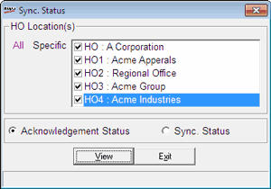

This report gives you the status of synchronisation and acknowledgements of the synchronisation process between Shoper POS and HO(s). The last successful synchronisation and acknowledgement received and all the pending acknowledgements there after are listed in this report.
How to reach: Housekeeping > POS-HO Synchronisation > Status Report
The Sync. Status window is displayed as shown.

HO Location(s): Select All or Specific to select HO(s) accordingly. If you have chosen Specific, select the types from the list.
Acknowledgement Status: Select to display the status of last acknowledgement received and all the pending acknowledgements.
Sync. Status: Select to display the status of last synchronisation process executed between POS and HO(s).